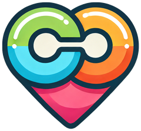

Caring made simple, together.
If you're running into an issue, have a question, or want to suggest a feature, reach out anytime:
Is my data private?
Yes. Care Companion stores everything — appointments, medications, dose history — directly on your device. There's no account, no server, and nothing is shared. See the Privacy Policy for details.
Will I lose my data if I get a new phone?
Since data is stored only on-device, it does not automatically transfer to a new device. We're exploring backup options for a future update.
Do reminders work without an internet connection?
Yes — appointment and medication reminders are scheduled locally on your device and don't require an internet connection to fire.